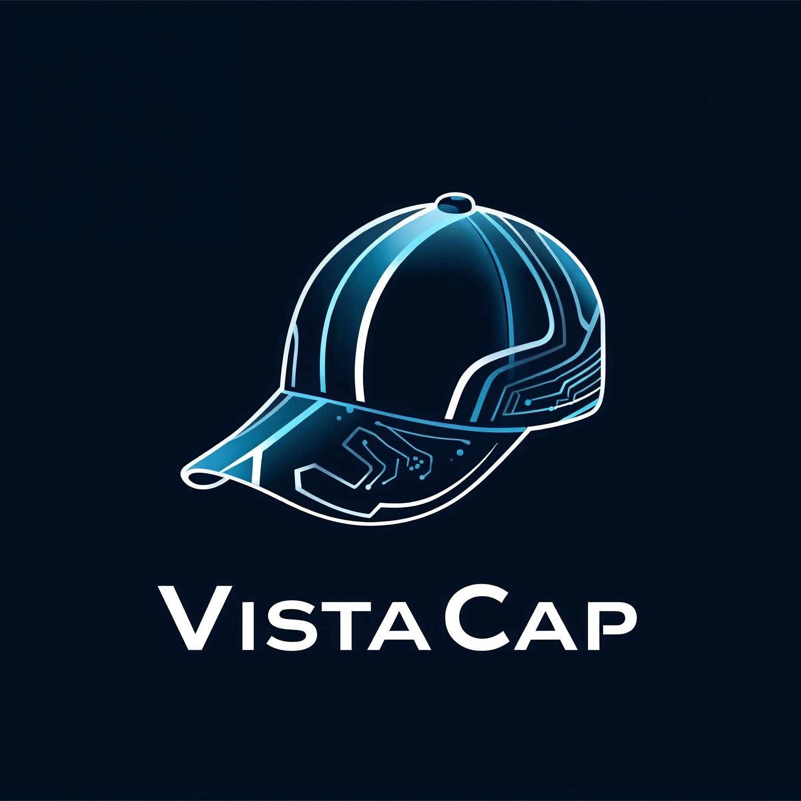

VISTACAP
Visual Intelligence Smart Cap for Accessibility, Translation & Perception

Visual Intelligence Smart Cap for Accessibility, Translation & Perception
VISTACAP is a wearable AI-powered cap that helps users interact with their surroundings through real-time visual detection, sign language recognition, and live translation.